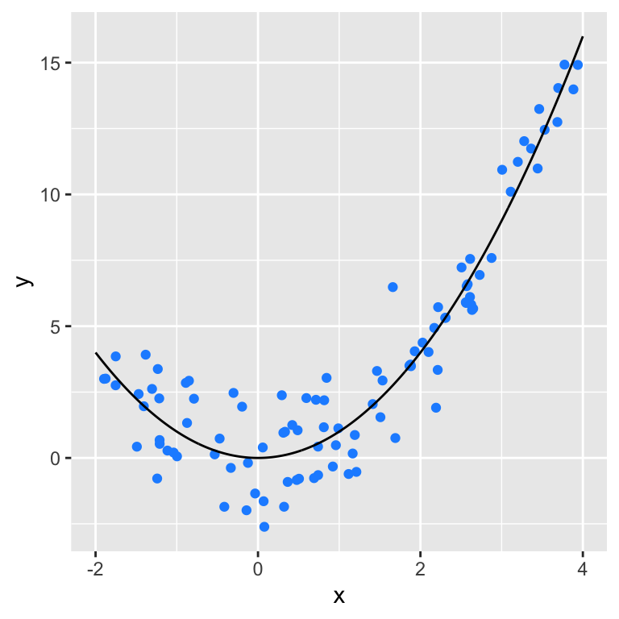
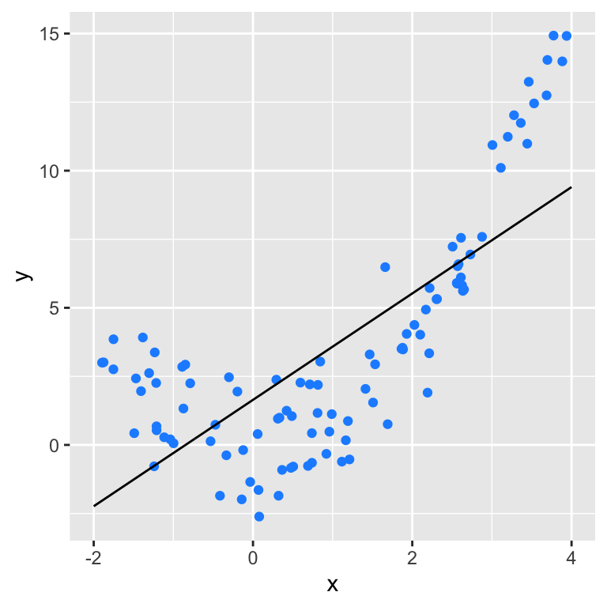
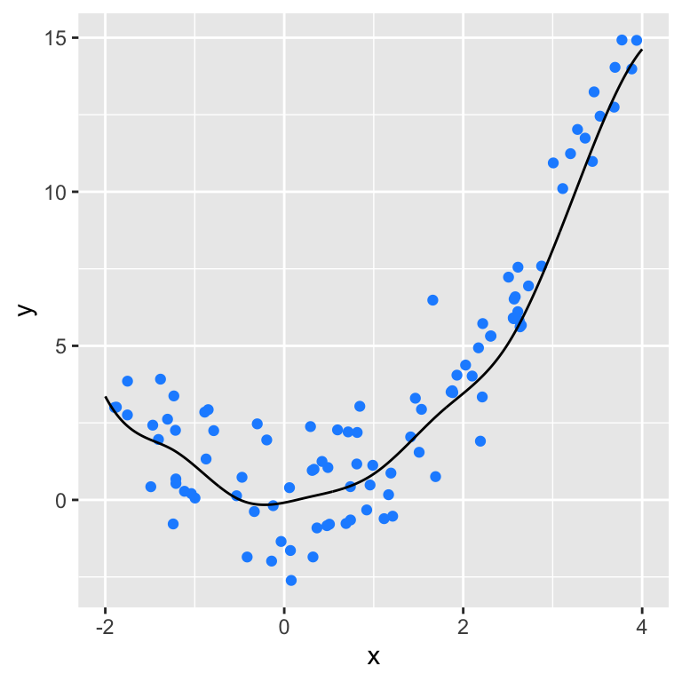
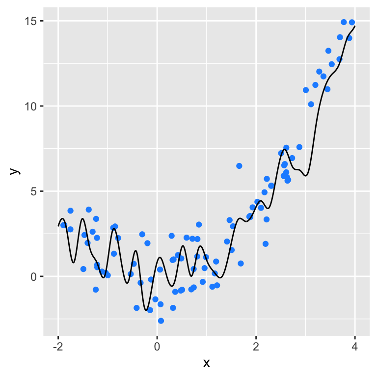
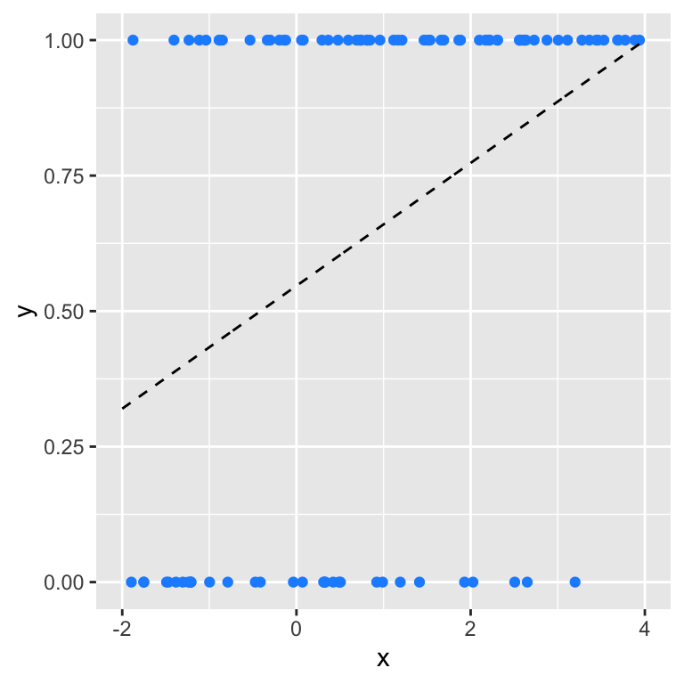
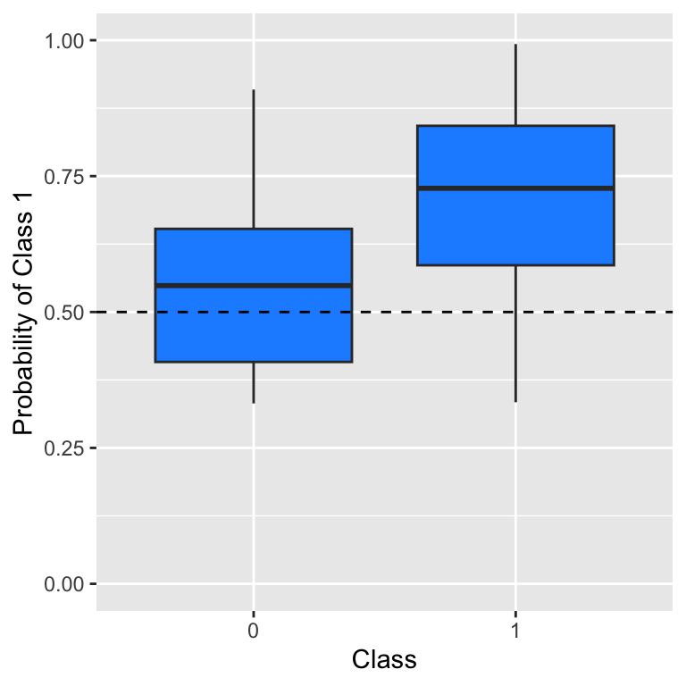
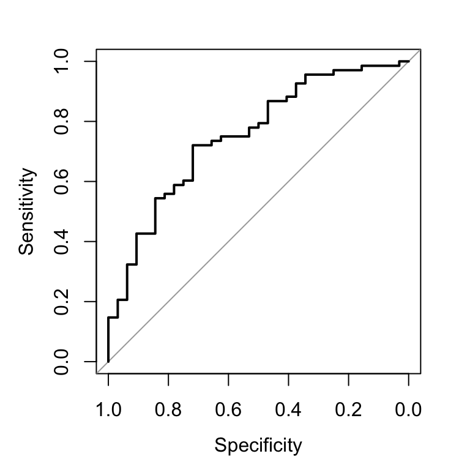
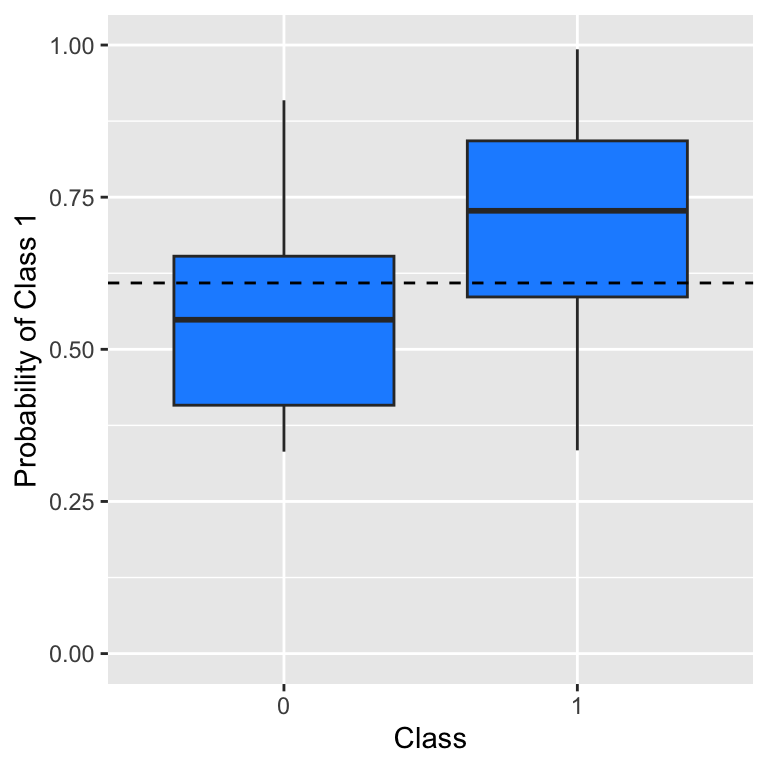

3 Supervised Learning
3.1 Introduction
Let’s suppose that someone has conducted an experiment and collected data, comprising…
- \(p+1\) measurements (recorded in columns of a data frame) for each of…
- \(n\) objects (recorded in rows of a data frame).
Let’s also suppose that we have carried out exploratory data analysis, and that we have found that all the measurements are statistically informative (i.e., we do not need to remove any data frame columns).
If our research goal is to statistically relate the data in \(p\) of the \(p+1\) columns to the data in remaining column, then we are attempting supervised learning. For instance, perhaps we are working with the stellar temperature data introduced previously, and we wish to relate the non-temperature data to the recorded temperatures. The data in the \(p\) non-temperature columns comprise the predictor (or independent or explanatory or feature) variables, while the data in the temperature column comprise the response (or dependent or target or label) variable.
Another way of describing the process of relating predictor and response variables is to say that we are trying to replicate the data-generating process, or that we are attempting to learn a statistical model. A statistical model is \[ Y \vert \mathbf{x} = f(\mathbf{x}) + \epsilon(x) \,, \] where \(f(\cdot)\) is a deterministic function that represents the average observed value of the random variable \(Y\), given \(\mathbf{x} = \{x_1,\ldots,x_p\}\) (where the \(x\)’s are assumed fixed), and \(\epsilon\) is an “error” term, a random variable drawn according to some distribution whose properties may or may not depend on \(x\). (\(\epsilon\) represents an “irreducible” error that we typically call “noise”.) Below, we show a “simple” setting in which we have a single predictor variable \(x\) and a response variable \(Y\). The black line is the unobserved true function \(y = f(x)\) while the blue points represent observed noisy data. When we are learning statistical models, we are attempting to find an optimal functional form for \(f(x)\), the so-called “regression line,” and not for \(f(\mathbf{x}) + \epsilon\). In other words, we are not attempting to “fit to the noise” represented by \(\epsilon\). Why this is will become clearer as we continue to work our way through the remainder of this chapter.
3.2 Inference Versus Prediction
In typical analysis situations, it is up to us to propose models that might represent the data-generating process. Before we would do that, however, we would want to think about our research goals. For instance, are we most interested in…
- …inference, wherein we learn a statistical model and then examine and interpret it, or…
- …prediction, wherein we learn a statistical model and then treat it as a black box?
For instance, for the stellar temperature data, is it important for us to be able to explain how individual predictor variables relate to a star’s temperature (inference), or does that not matter at all so long as we can estimate the temperature well (prediction)? There is no one-size-fits-all answer to this question: we have to come up with one on a case-by-case basis.
But, the reader may ask, “why does the question really even matter?” It matters because the answer can impact the possible suite of models that we might examine in an analysis:

In this diagram, a “specified function” is one that is mathematically specifiable a priori; for instance, for simple linear regression, the specified function is \[ f(x) = \beta_0 + \beta_1 x \,, \] where \(\beta_0\) and \(\beta_1\) are the intercept and slope coefficients, respectively. When this model is learned, all we do is generate estimates \(\hat{\beta}_0\) and \(\hat{\beta}_1\); we do not change the form of the model (by, e.g., adding additional terms like \(\beta_2 x^2\) on the fly). Models with specified functions are good for inference: we can easily interpret what, e.g., \(\hat{\beta}_1\) means…it means that if we change \(x\) by one unit, our estimate of the average value of \(y\) changes by \(\hat{\beta}_1\) units.
On the other hand, “learned functions” are those that are constructed piece-by-piece given an algorithm. For instance, if we were to model the relationship between \(x\) and \(y\) using a decision tree, we would not know a priori how many branches the tree will have, or its depth. Models with learned functions can offer some amount of inference\(-\)for instance, if we plot a tree, we can see which of the predictor variables contribute to model predictions more than others\(-\)but they do not offer the same level of interpretability…with some allowing little, if any, interpretation at all.
Let’s delve a bit deeper into the tradeoff between inference and prediction.

Above we overlay a simple linear regression model on our observed data. We see that this model does not provide a good estimate of \(f(\mathbf{x})\)…but it has the virtue of being easy to interpret.

Here, we overlay a regression spline model on our observed data, and we see immediately that while it does provide a good (not claiming optimal, but definitely good) estimate of \(f(\mathbf{x})\), it is not easy to condense the details of this model into a concise inferential story.
In the end, the more flexible a model is, the better predictions it will generate, but the harder it will be to explain.
TBD - point about visualization and 1D
Above, we said that our analysis goal can impact our modeling choices. However, we would say the following.
- Even if inference is our goal, we should still always include “learned function” models among the suite of models that we learn in an analysis. That’s because if we do not explore such models, we will never know how much better they might be at representing the data-generating process. If a machine learning model does a much better job at predicting response values than linear regression, is it worthwhile to focus on linear regression so that we can tell a concise “data story”? That story may not reflect reality well!
- Even if prediction is our goal, we should still always include “specified function” models like linear regression in our suite of learned models, because if the true association between the predictors and the response is actually linear, learning more complex learned function-based models will not offer any return in model predictive ability. Sometimes we can have the best of both words: an easily interpreted model that generates good predictions. In short: do not be a machine learning snob!
Try all reasonable models, regardless of the analysis goal…and then sort out the results.
3.3 Learning a Statistical Model
Above, we show an example in which a flexible regression spline model represents the data-generating process well. But couldn’t we do even better if we added more flexibility? Shouldn’t our goal be to learn a model that, when plotted, goes through every observed data point?

“We are getting closer to drawing the line through every data point. That’s good, right?” As we have already indicated, it is not: what we want is an estimate of \(f(x)\) and not \(f(x) + \epsilon\), i.e., we do not want to fit to the noise. This is because overly flexible models are not generalizable: they will do a bad job predicting the response given new data that were not used in learning the model.
The question that naturally arises is how can we prevent learning a model like the one above, when we know that as we add flexibility, our quality of fit metrics (like the residual sum of squares) will only improve? The short answer is that we should not use all of our data to learn a model! If we hold some data out of the learning process, we can later use them to determine what level of flexibility is the right level of flexibility, i.e., to determine what model is the most generalizable of all the models we examine.
There are two common approaches for holding out data:
- We split our dataset into two disjoint groups, a training set that is used to learn models, and a test set that is used to assess them.
- We repeat the data-splitting process \(k\) times, with each datum being placed in the “held-out” group exactly once. This is k-fold cross validation.
In practice, the latter approach is preferred to the former approach, since it results in model assessment metrics that have less variability. However, the former approach is computationally more straightforward, and thus it is the one we will use in this work. Note that there are no heuristics, per se, that dictate how we split the data; we generally use 70% of the data, chosen randomly and without replacement, as our training data and the remaining 30% as our testing data.
3.4 Assessing a Statistical Model
3.4.1 Regression
When the response variable is quantitative, a most commonly used assessment metric is the root mean-squared error, or RMSE, computed with the test-set data only: \[ RMSE = \sqrt{\frac{1}{n_{\rm test}} \sum_{i=1}^{n_{\rm test}} (Y_i - \hat{Y}_i)^2} \,, \] where \(Y_i\) and \(\hat{Y}_i\) are the observed and predicted response values for the \(i^{\rm th}\) test-set datum. The RMSE is technically not the average difference between \(\hat{Y}_i\) and \(Y_i\), but it does give an indication of the average difference. Because the magnitude of RMSE values will be affected by the units of the response variable, we should never fixate on the RMSE value itself, but rather how that value changes as we learn different statistical models.
Note: to ensure an apples-to-apples comparison of RMSE values for different models, we should always use the same training and test datasets; in other words, we should never re-split our data before learning each model. This also applies below, when are working in the context of classification.
3.4.2 Classification
When the response variable is categorical, the choice of model assessment metric, and how it is calculated, is not as clear-cut as when the response is quantitative. Below, we outline a principled approach model assessment when we have a dichotomous, or binary, response. We will discuss how we deal with response variables that have more than two categories as needed in future chapters.
To start, let’s suppose we have the following test-set data:

The dashed black line represents the (made up) learned statistical model. In constrast to regression, here that model does not represent the conditional mean of \(Y\) given \(x\), but rather the probability of sampling the value \(Y=1\) (“Class 1”) as a function of \(x\). The blue dots represent the observed data.
First, let’s determine the predicted Class 1 probability for each test-set datum and plot the probabilities as a function of the true class.
prob <- 0.32 + 0.68*(df.test$x+2)/6
df.plot <- data.frame("x"=factor(df.test$y), "y"=prob)
ggplot(data=df.plot, mapping=aes(x=x, y=y)) +
geom_boxplot(fill="dodgerblue") +
geom_hline(yintercept=0.5, lty=2) +
ylim(0,1) +
xlab("Class") + ylab("Probability of Class 1")
What we see immediately is that, as we would expect, predicted Class 1 probabilities are larger for data that actually belong to Class 1.
Next, we need to turn the predicted Class 1 probabilities into predictions of classes. What we think of as binary classifiers (such as logistic regression) do not actually classify data: they generate predicted Class 1 probabilities, and it is up to us to map them to actual classes. At first, this would seem to be trivial: “of course we would map data with predicted probabilities greater than 0.5 to Class 1, and those with predicted probabilities less than 0.5 to Class 0.” (As predicted probabilities are rarely, if ever, equal to 0.5, we will sweep the issue of how to classify data with such probabilities under the rug.) But look again at the figure above: while we would do a good job of identifying Class 1 data, we would do terribly with Class 0 data. So 0.5 is probably not the optimal threshold value to use here.
Using a default threshold probability value of 0.5 doesn’t work here because the data exhibit class imbalance: some 68% of the data belong to Class 1, and because of that, the probability estimates for all the training data are biased upwards towards 1. So our next move might be to say, OK, instead of using 0.5 as a threshold, we will use 0.68. And this would improve our ability to identify Class 0 objects while sacrificing some ability to identify Class 1 objects. But there is a better algorithmic process that we can implement instead, one that involves computing the so-called receiver operating characteristics curve, or ROC curve.
suppressMessages(library(pROC))
roc.out <- suppressMessages(roc(df.test$y, prob))
plot(roc.out)
names(roc.out) [1] "percent" "sensitivities" "specificities"
[4] "thresholds" "direction" "cases"
[7] "controls" "fun.sesp" "auc"
[10] "call" "original.predictor" "original.response"
[13] "predictor" "response" "levels" roc.out$aucArea under the curve: 0.7528There is a bit to unpack here.
- One of the outputs from
roc()isauc, or “area under curve.” It is literally the area under the curve plotted above. In words, the area under the curve represents the probability that a randomly selected datum of Class 1 has a higher predicted Class 1 probability than a randomly selected datum of Class 0. If our model randomly guesses probabilities, then the AUC will be around 0.5, and if our model can completely separate the two classes, the AUC will be 1. If we are comparing a suite of models, we would advise adopting the one associated with the highest AUC value. Here, the AUC is 0.753. - The plot exhibits two values: “specificity” along the \(x\)-axis, and “sensitivity” along the \(y\)-axis. A ROC curve shows sensitivity versus specificity as computed for a number of thresholds between 0 and 1. The former indicates the proportion of Class 0 data that are correctly identified as such; the latter is the same, for Class 1. While there is no unique prescription, we would advise determining the threshold value for which the sum of specificity and sensitivity is maximized. (This sum is dubbed “Youden’s \(J\) statistic,” although by definition, 1 is subtracted from the sum. Subtracting 1 makes no difference in what follows.) By maximizing this sum, what we are effectively doing is defining a classifier that does the best job of balancing the classification performance in both classes: as indicated above, we will sacrifice some of our ability to identify objects of the majority class in order to substantially improve identification of objects of the minority class.
w <- which.max(roc.out$sensitivities+roc.out$specificities)
t <- roc.out$threshold[w]
round(t, 3)[1] 0.609ggplot(data=df.plot, mapping=aes(x=x, y=y)) +
geom_boxplot(fill="dodgerblue") +
geom_hline(yintercept=t, lty=2) +
ylim(0,1) +
xlab("Class") + ylab("Probability of Class 1")
As we can see from our updated boxplot, if we shift the threshold value from 0.5 to 0.609 (as opposed to 0.68), we will do a better job of classifying data in the weaker class (Class 0), while sacrificing performance in the stronger class (Class 1).
Our last step is to determine a misclassification rate, given our adopted threshold.
pred <- ifelse(prob>t, "1", "0")
table(pred, df.plot$x)
pred 0 1
0 23 19
1 9 49mean(pred != df.plot$x)[1] 0.28The displayed table is dubbed a confusion matrix, and it shows the following information:
| Actual Negative | Actual Positive | |
|---|---|---|
| Predicted Negative | True Negative (TN) | False Negative (FN) |
| Predicted Positive | False Positive (FP) | True Positive (TP) |
The misclassification rate or MCR is the overall proportion of false positives and negatives; here, the MCR is 0.280. (Conversely, the accuracy is \(1-MCR\), or 0.720.) The MCR is a classic model assessment metric, but it does implicitly give the same weight to both types of misclassification, which may not be optimal in a given analysis situation. The sensitivity, evaluated in the right column, is \(TP/(TP+FN)\) (here, 49/68 or 0.721), while the specificity, evaluated in the left column, is defined as \(TN/(TN+FP)\) (here, 23/32 or 0.719). Note that some (like Wikipedia) define the confusion matrix with the negatives and positives reversed, but this is fine: it does not affect evaluated numbers. (We prefer to associate positivity with Class 1.) Also note that there are a myriad of other metrics that one can define given the four numbers in a confusion matrix; ultimately, how we combine the elements of a confusion matrix into a model assessment metric is up to us.
3.4.3 Summary: a Principled Classification Workflow
- Learn a suite of models; for each, generate Class 1 probabilities for each test-set datum using
predict(). - Using these probabilities as input, generate ROC curves for each model, using the
roc()function. - Examine the outputs from
roc()and record the AUC value for each model. - Pick the model that has the highest AUC value.
- For that model only, compute the optimal class-separation threshold \(t\) by maximizing Youden’s \(J\) statistic (the sum of sensitivities and specificities, the values of which are provided in the output from
roc()). - Given \(t\), convert the Class 1 probabilities for the model into class predictions.
- Generate a confusion matrix and a misclassification rate.
Always keep in mind that when there is class imbalance, maximizing Youden’s \(J\) statistic does not mean that we are minimizing the misclassification rate. The overall MCR will go up, but classification results for the minority class will improve substantially!
3.5 Model Selection
Model selection is picking the best model from a suite of possible models. This can be as simple as picking the regression model with the best MSE or the classification model with the best AUC. However, we must always keep two things in mind:
- To ensure an apples-to-apples comparison of metrics, every model should be learned using the same training- and test-set data.
- An assessment metric is a random variable, i.e., if we split the data differently, the metric will take on a different value. The possible range of values, or variance, of the metric can be made smaller by utilizing \(k\)-fold cross-validation as opposed to simple data splitting (although, again, for computational simplicity we adopt the latter approach in this work).
3.6 Reproducibility
To conclude this chapter, we will note that it is extremely important to make our statistical analyses reproducible. For instance:
- We should always record our analyses in a notebook, via, e.g.,
R MarkdownorJupyter, such that someone else can recreate them. (Or so that you yourself can figure out what you did, well after the fact.) - To ensure that that someone else achieves the exact same results, we should always manually set the random-number generator seed before each instance of random sampling in your analysis (such as when we assign data to training or test sets, or to folds, or when we learn a model like random forest that incorporates random sampling):
set.seed(101) # can be any number...
sample(10,3) # sample three numbers between 1 and 10 inclusive[1] 9 10 6set.seed(101)
sample(10,3) # voila: the same three numbers![1] 9 10 6